File: 000510.gt.txt (if the image is defective, simply delete all Arabic text and the line will be excluded)
لعز الدولة، فجن عليه واشتد حزنه، وتسلى عن كل شيء إلا عنه، وامتنع
File: 000511.gt.txt (if the image is defective, simply delete all Arabic text and the line will be excluded)
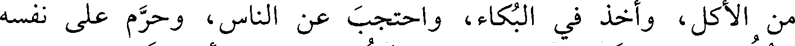
من الأكل، وأخذ في البكاء، واحتجب عن الناس، وحرم على نفسه
File: 000512.gt.txt (if the image is defective, simply delete all Arabic text and the line will be excluded)
الجلوس في الدست، وكتب إلى عضد الدولة يسأله رد الغلام إليه،
File: 000513.gt.txt (if the image is defective, simply delete all Arabic text and the line will be excluded)

ويتذلل، فصار ضحكة بين الناس، وعوتب فما ارعوى، وبذل في فداء
File: 000514.gt.txt (if the image is defective, simply delete all Arabic text and the line will be excluded)
الغلام جاريتين عوديتين، كان قد بذل له في الواحدة مئة ألف، فأبي أن
File: 000515.gt.txt (if the image is defective, simply delete all Arabic text and the line will be excluded)
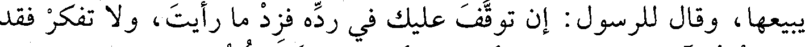
يبيعها، وقال للرسول: إن توقف عليك في رده فزد ما رأيت ولا تفكر فقد
File: 000516.gt.txt (if the image is defective, simply delete all Arabic text and the line will be excluded)
رضيت أن آخذه واذهب إلى أقصى الأرض، فرده عضد الدولة عليه.
File: 000517.gt.txt (if the image is defective, simply delete all Arabic text and the line will be excluded)
وحج بالناس من العراق أبو عبدالله أحمد بن أبي الحسين العلوي،
File: 000518.gt.txt (if the image is defective, simply delete all Arabic text and the line will be excluded)
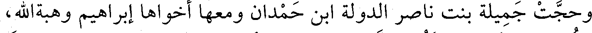
وحجت جميلة بنت ناصر الدولة ابن حمدان ومعها أخواها إبراهيم وهبةالله،
File: 000519.gt.txt (if the image is defective, simply delete all Arabic text and the line will be excluded)
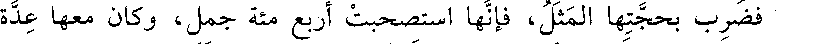
فضرب بحجتها المثل، فإنها استصحبت أربع مئة جمل، وكان معها عدة
File: 000520.gt.txt (if the image is defective, simply delete all Arabic text and the line will be excluded)
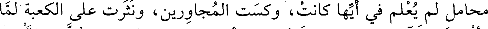
محامل لم يعلم في أيها كانت، وكست المجاورين، ونثرت على الكعبة لما
File: 000521.gt.txt (if the image is defective, simply delete all Arabic text and the line will be excluded)
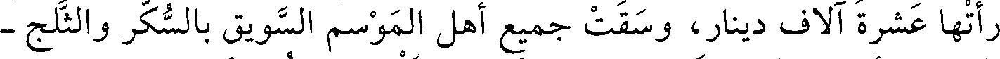
رأتها عشر آلاف دينار، وسقت جميع أهل الموسم السويق بالسكر والثلج -
File: 000522.gt.txt (if the image is defective, simply delete all Arabic text and the line will be excluded)
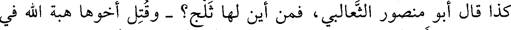
كذا قال أبو منصور الثعالبي، فمن أين لها ثلج؟ - وقتل أخوها هبة الله في
File: 000523.gt.txt (if the image is defective, simply delete all Arabic text and the line will be excluded)
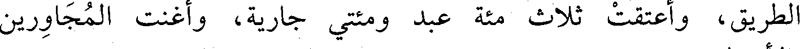
الطريق، وأعتقت ثلاث مئة عبد ومئتي جارية، وأغنت المجاورين
File: 000524.gt.txt (if the image is defective, simply delete all Arabic text and the line will be excluded)
بالأموال.
File: 000525.gt.txt (if the image is defective, simply delete all Arabic text and the line will be excluded)
قال أبو منصور الثعالبي: خلعت على طبقات الناس خمسين ألف
File: 000526.gt.txt (if the image is defective, simply delete all Arabic text and the line will be excluded)
ثوب، وكان معها أربع مئة عمارية لا يدرى في أيها كانت، ثم ضرب الدهر
File: 000527.gt.txt (if the image is defective, simply delete all Arabic text and the line will be excluded)
ضربانه، واستولى عضد الدولة على أموالها وحصونها وممالك أهل بيتها
File: 000528.gt.txt (if the image is defective, simply delete all Arabic text and the line will be excluded)
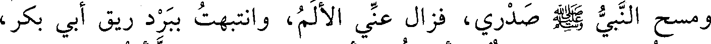
ومسح النبي صعلم صدري، فزال عني الألم، وانتبهت ببرد ريق أبي بكر،
File: 000529.gt.txt (if the image is defective, simply delete all Arabic text and the line will be excluded)
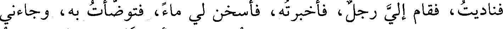
فناديت، فقام إلي رجل، فأخبرته، فأسخن لي ماء، فتوضأت به، وجاءني
File: 000530.gt.txt (if the image is defective, simply delete all Arabic text and the line will be excluded)
بثياب ونفقة وقال: هذا فتوح، فقمت فقال: أين تمر الله الله، فجئت
File: 000531.gt.txt (if the image is defective, simply delete all Arabic text and the line will be excluded)
المأذنة وأذنت الصبح: « الصلاة خير من النوم » ، ثم قلت قصيدة في
File: 000532.gt.txt (if the image is defective, simply delete all Arabic text and the line will be excluded)
الصحابة، فأخذت إلى الوالي فقال: يا هذا، اذهب ولا تقم ببلدي، فإني
File: 000533.gt.txt (if the image is defective, simply delete all Arabic text and the line will be excluded)
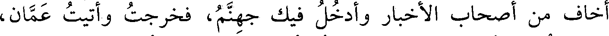
أخاف من أصحاب الأخبار وأدخل فيك جهنم، فخرجت وأتيت عمان،
File: 000534.gt.txt (if the image is defective, simply delete all Arabic text and the line will be excluded)
فاكتريت مع عرب إلى الكوفة، فأتيت واسط، فوجدت بنتي تبكي علي،
File: 000535.gt.txt (if the image is defective, simply delete all Arabic text and the line will be excluded)
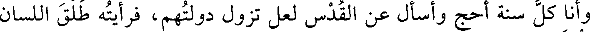
وأنا كل سنة أحج وأسأل عن القدس لعل تزول دولتهم، فرأيته طلق اللسان
File: 000536.gt.txt (if the image is defective, simply delete all Arabic text and the line will be excluded)

ألثغ.
File: 000537.gt.txt (if the image is defective, simply delete all Arabic text and the line will be excluded)
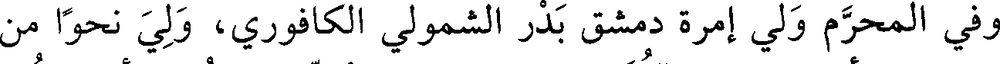
وفي المحرم ولي إمرة دمشق بدر الشمولي الكافوري، ولي نحوا من
File: 000538.gt.txt (if the image is defective, simply delete all Arabic text and the line will be excluded)
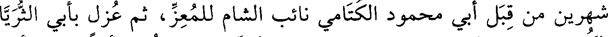
شهرين من قبل أبي محمود الكتامي نائب الشام للمعز، ثم عزل بأبي الثريا
File: 000539.gt.txt (if the image is defective, simply delete all Arabic text and the line will be excluded)
الكردي، ثم ولي دمشق ريان الخادم المعزي، ثم عزل أيضا بعد أيام
To Save: `Ctrl+s`, make sure to choose `Webpage, complete`!